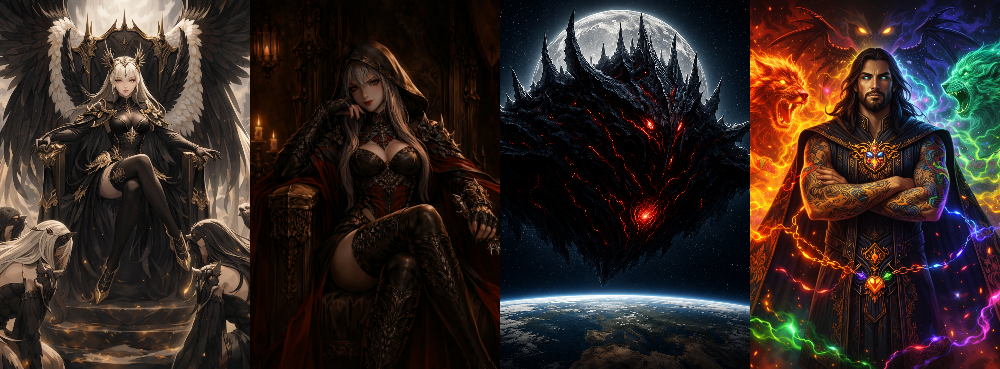
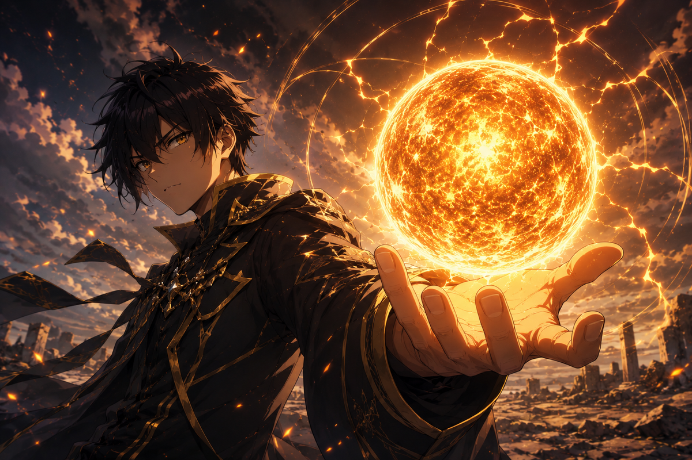
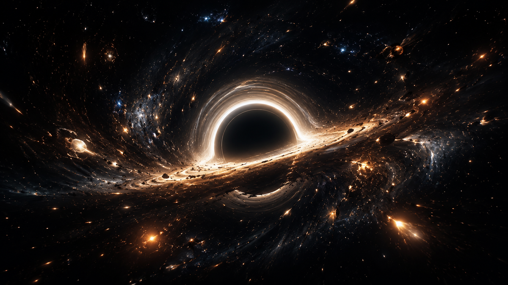

Les Navigateurs : votre choix !
Le Navigateur impose son style et définit votre stratégie.
JEU DE CARTES STRATÉGIQUE INDÉPENDANT
Explorez l'univers d'Astral Cards. Chaque fragment vous ouvre une destination.
UNE AVENTURE À CONSTRUIRE
Astral Cards est pensé pour proposer des choix importants à chaque tour, une identité forte pour chaque joueur et un univers qui grandit avec sa communauté.

Le Navigateur impose son style et définit votre stratégie.

Plus la partie avance, plus les astres s’alignent pour une montée en puissance.

Gagnez des étoiles, consumez-les pour activer des effets surpuissants ou accumulez-les pour remporter une victoire écrasante.
EN DÉVELOPPEMENT
Les retours de la communauté aide au développement d'Astral Cards.
Suivre les nouveautés →STATUT DU PROJET
Rejoignez les playtesteurs d'Astral Cards et accédez en avant-première aux futurs sets, aux nouvelles illustrations, aux effets des cartes et aux secrets du lore.
REJOIGNEZ L’AVENTURE
Suivez le développement, échangez avec la communauté et participez aux prochaines phases de test.